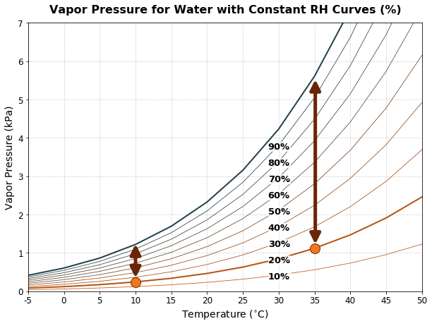
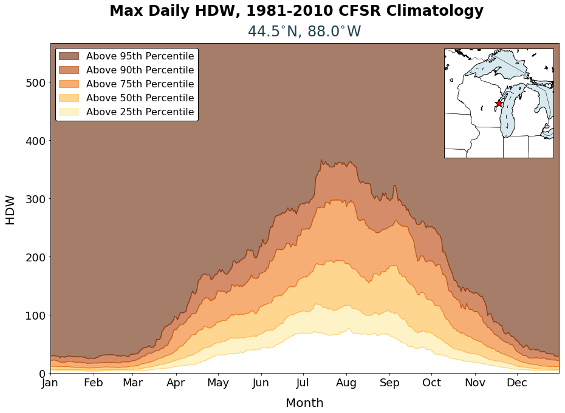
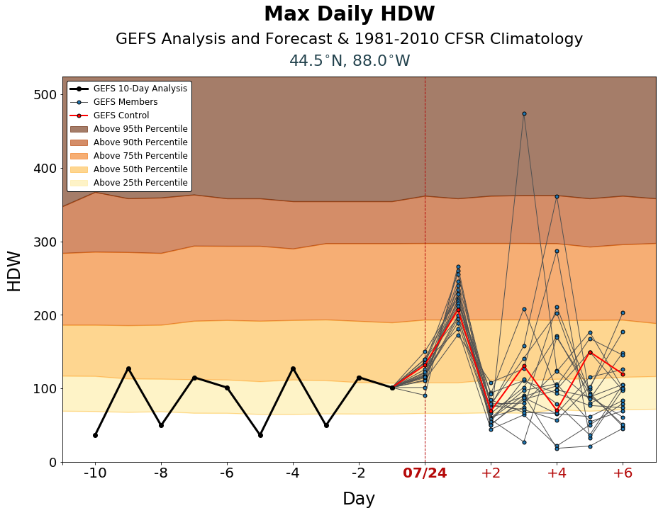

A Brief Introduction to HDW
Quick Links: What is HDW? | What is VPD? | CFSR Climatology | GEFS Forecasts | Known IssuesWhat is HDW?
The Hot-Dry-Windy Index (HDW) was designed to help users determine which days are more likely to have adverse atmospheric conditions that make it more difficult to manage a wildland fire. It combines weather data from the surface and low levels of the atmosphere into a first-look product.
HDW was designed to be very simple – a multiplication of the maximum wind speed and maximum vapor pressure deficit (VPD) in the lowest 50 or so millibars in the atmosphere. Because HDW is affected by heat, moisture, and wind, seasonal and regional variability can be found when comparing HDW values from different locations and times.
Currently, we have two published articles about HDW:
Srock, A.F., Charney, J.J., Potter, B.E., and Goodrick, S.L., 2018: The Hot-Dry-Windy Index: A new fire weather index. Atmosphere, 9, 279. doi: https://doi.org/10.3390/atmos9070279
McDonald, J.M., Srock, A.F., and Charney, J.J., 2018: Development and application of a Hot-Dry-Windy Index (HDW) climatology. Atmosphere, 9, 285. doi: https://doi.org/10.3390/atmos9070285
What is VPD?
Vapor pressure deficit (VPD) combines moisture and temperature into a single variable. It is important to consider moisture and temperature together, as their relationship represents the evaporative potential of the atmosphere. Moisture and temperature can be represented by vapor pressure (e) and saturation vapor pressure (es), respectively. VPD is the difference between these two (es – e).
Traditionally, Relative Humidity (RH) has been used to determine this relationship in the form of a ratio (e/es). However, this ratio can lead to some confusion and potential for error when determining how temperature and moisture could affect a fire, especially at extreme (high or low) temperatures.
Consider the vapor pressure graphic on the right to explore this concept further. Both orange dots represent a RH of 20% – in an RH framework, these two points are equivalent, but the "dryness" of the atmosphere is far from equal. In contrast, the arrows represent the VPD. Notice that the VPD increases exponentially as the temperature increases linearly, despite RH staying constant. This is because warmer air has greater potential for evaporation and drying of fuels. Therefore, VPD is more informative than RH for determining when atmospheric conditions could affect a wildland fire.
(return to top)HDW Climatology using CFSR
The Climate Forecast System Reanalysis (CFSR) is the most recent global reanalysis from NCEP, available at 0.5-degree grid spacing from 1979 to 2012. (It is being updated in near-real-time as the CFSv2 to build a long-term, consistent product.)
The climatology window chosen for comparison is the standard 30-year window (1981-2010). For the CONUS domain, we have elected to plot the daily maximum value of HDW for each CFSR grid point from the 12z, 18z, and 00z CFSR output (we presume here that 06z is likely to be small for CONUS, and did not want to introduce confusion about which date contained the 06z information.) For Alaska, we use 18z, 00z, and 06z CFSR output for the climatology because it better represents the daytime period at those longitudes.
Because we want to use percentiles to help us compare analyzed and forecast HDW values to this climatology, we needed a more representative comparison sample from the climatology. Thus, for each day in the climatology, we look at a 15-day window (7 days before to 7 days after the chosen day) for all 30 years, giving us 450 HDW values to build our percentile distribution for each date. (This will feel somewhat like a running mean, but we're not actually taking the mean of anything.)
Here's an example climatology plot:
Let's start with the basics. The x-axis shows every day of the year (with the first day of each month labeled), so you can see the entire annual cycle on this plot. The y-axis is the calculated HDW. Each grid point (location shown in the inset) will have a different distribution. For example, note the strong seasonal signal at this location.
The color shading is based on the percentiles calculated within the climatology. Thus, for mid-July at this location, the 25th percentile HDW value is about 70, while the 95th percentile HDW value is about 350. We have found this narrower-percentile window to be more useful than a yearly-percentile window when interpreting HDW because a 97th percentile HDW value means HDW is very high for that "season", not just very high compared to the whole year. For locations with a huge yearly variation in HDW, this method is especially helpful.
(return to top)HDW Forecasts using GEFS
This set of figures is based on the GEFS (basically, the GFS ensemble) analyses for the preceding 10 days and the forecast for the next 7 days. The GEFS contains 21 members (one control and twenty perturbations); each of them are plotted here. Forecasts are from the 0000 UTC GEFS run.
Let's look at a sample figure to describe more about what's included:
The color shading in the background is driven by the CFSR climatology for the grid point being examined. For more about how the colors and percentiles are defined, see the CFSR Climatology section of this page. The image here shows the key temporal subset of the yearly figure that you would see on the full climatology plot.
The single-line trace preceding today's date is the highest HDW value recorded on that day using the 00-hour analyses from the GEFS. Thus, you see the highest HDW recorded at that point on the previous days. This trace thus shows the recent HDW trend at your chosen location.
Starting with today (denoted with the vertical line and which is technically a forecast period), each of the individual ensemble members is plotted separately. The GEFS outputs data every three hours; we take the highest value between 1200 and 0300 UTC for each member each day to make this plot (1800 to 0900 UTC for Alaska). The control run is plotted in red so it is easier to find.
Note what this example shows us: in every member, HDW suggests the potential for more dangerous weather conditions at this location tomorrow than it does today. After tomorrow, though, the forecast uncertainty rises rapidly.
Also note that the vertical scale will change based on the available data; keep this in mind if comparing multiple locations!
(return to top)Caveats and Known Issues
This version of HDW can only find larger-scale weather features. The grid spacing is 0.5 degrees of latitude/longitude, so HDW cannot resolve many fronts and/or complex terrain flows.
Remember that HDW only uses weather information - fuels and topography aren't considered by HDW at all!
This site only uses the GEFS ensemble forecasts. If the GEFS initialization (or GFS) is wrong, the members are likely to be wrong too. However, using GEFS lets us compare to climatology at the same grid points and create multi-day forecasts.
(return to top)